Ingredion to Showcase Plant-Based Expertise at PBWE2022
Ingredion will demonstrate its plant-based credentials at the upcoming Plant Based World Expo 2022 (30 November - 1 December) alongside KaTech Ingredient Solutions, which Ingredion acquired.
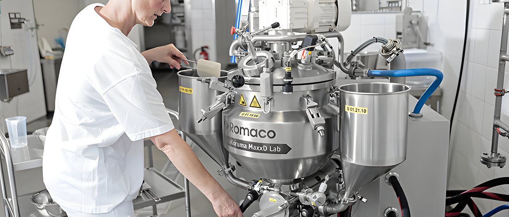
Texture and stabilising solutions
KaTech develops bespoke stabilising and emulsifying systems for food manufacturers across dairy, plant-based, savoury and bakery. Developed in our own pilot plants, produced in Germany, the UK and Poland.
What we solve
Eleven application areas, more than one hundred product types. Every solution is developed for your recipe, your process and your raw materials.

Meat and fish alternatives that keep their bite. Texture built on dedicated pilot machinery, not on paper.
View area
Set, stirred, drinking or Greek style: the mouthfeel consumers expect, at the fat level your costing allows.
View area
Cream cheese, processed, quarg, analogue. Spreadability and melt behaviour that survive your process.
View area
Full fat, reduced fat, egg free, clean label. Emulsions that do not break on the line.
View area
Whipping, cooking, sour and non-dairy. Stability through heat, shear and shelf life.
View area
Cakes, muffins, choux, fillings and toppings, including the Scratch Plus system for clean label and allergen free baking.
View areaPlant-based
Plant-based products only succeed if they taste and feel like what they replace. Texture is where most of them fail.
Our centre of excellence for meat and fish alternatives in Lübeck lets us build and test that texture on real machinery, not on paper.
How we work
A stabiliser that works in the lab and fails on your line is worth nothing. That is why our technologists work hands-on, from the first trial to the factory run.
Everything is confidential, and everything stays yours.

Quality and safety
Food safety has been the focus since the company started in 2011. KaTech holds the rare BRC Food AA rating and is audited against every standard our customers need.
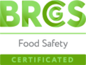
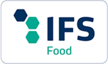
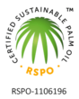
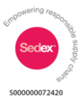
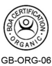
From idea to line
The same technologists who design your formulation stand next to your production line when it runs for the first time.
Your end product goals, your process capabilities and the raw materials you already buy. Nothing is designed against a line that cannot run it.
Development in our pilot plants in Lübeck and Cheshire, on equipment that behaves like production equipment. Iterations happen in days, not quarters.
Our technologists come to your factory for the scale-up trial. The people who designed the system are the people standing next to it.
Blending and supply from our allergen-controlled production site, with the technical contact you already know.
Our facilities
Development happens on equipment that behaves like yours. Production runs in a purpose-built, allergen-controlled blending site in northern Germany.
Our subsidiary near Poznań serves the Polish market from its own temperature and humidity controlled warehouse.
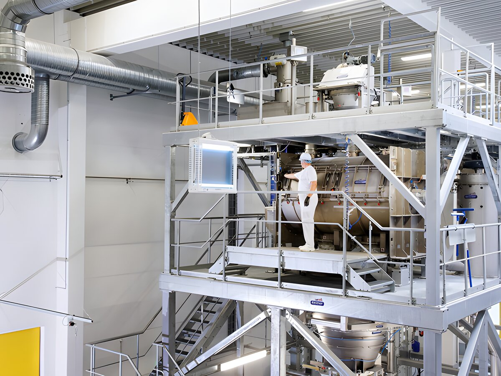
Highlights
Seven things worth knowing about the company. Drag the row or click an item to read it in full.
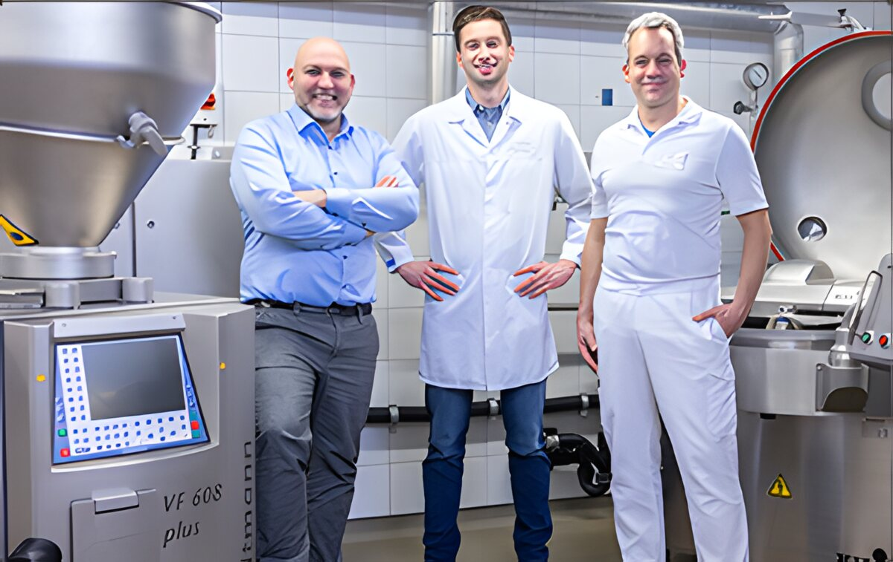
KaTech strengthens its focus on meat and fish alternative products with the extension of their pilot machinery.
The centre of excellence for meat and fish alternatives in Lübeck opened in February 2022. The new high-tech machinery lets our technical team build and test the texture of plant-based products on equipment that behaves like production equipment.
Open the page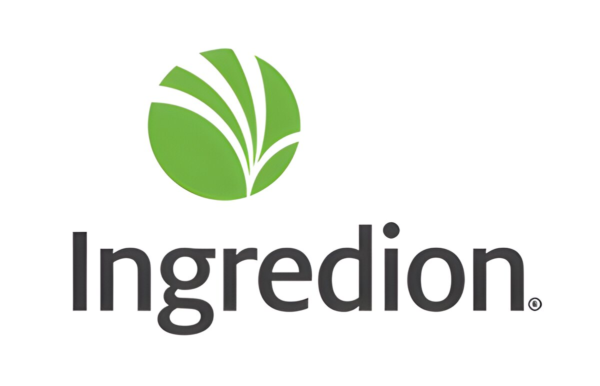
Ingredion Incorporated, a leading global provider of ingredient solutions to the food and beverage industry, has acquired KaTech.
Since 2021 KaTech has been part of Ingredion Incorporated. The combination brings together KaTech's formulation expertise with Ingredion's texture business in Europe, giving customers access to a wider range of nature-based ingredients alongside the bespoke work they know.
Open the page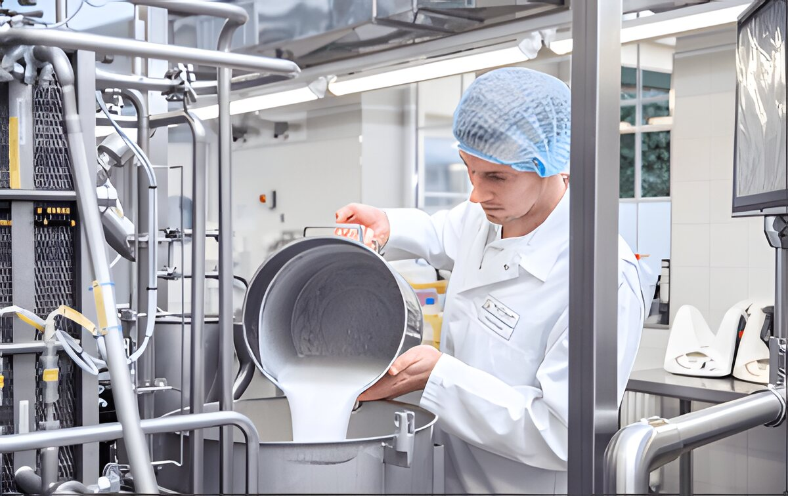
KaTech's highly experienced development team create bespoke stabilising and emulsifying solutions for plant-based, dairy and dairy alternative, meat and fish, savoury and bakery products.
Every solution is built for one recipe, one process and one set of raw materials. Our technical sales and technical staff are hands-on, with years of experience in real production environments, and they support development from the first idea to the factory trial.
Open the page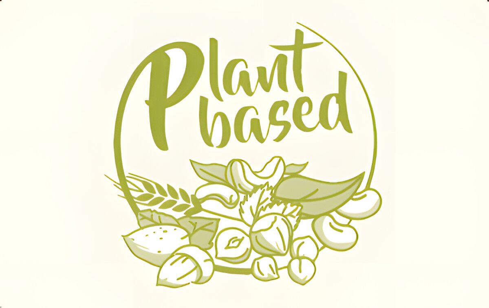
KaTech use their expertise around functional plant-based food ingredients and technology to develop high quality food products.
Plant-based products only succeed if they taste and feel like what they replace, and texture is where most of them fail. Our range covers meat and fish alternatives as well as plant-based dairy: yogurt, cream, drinks, desserts and cheese alternatives.
Open the pageAt our pilot plant facilities, our technologists support food manufacturers and brands with trials, to facilitate development of their latest products.
Development happens in our pilot plants in Lübeck and Cheshire. Iterations take days rather than quarters, and the technologists who designed the formulation stand next to your line when it runs for the first time.
Open the page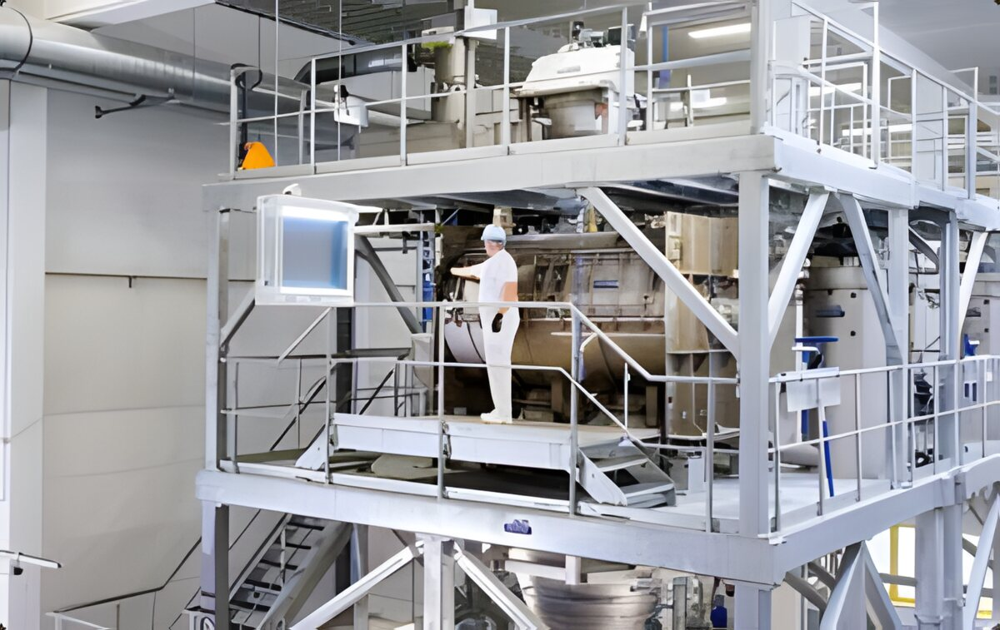
KaTech's state of the art facilities provide for tailored functional ingredient blending.
Production runs in a purpose-built, allergen-controlled blending site in northern Germany. The facilities are fully certified to meet the needs of food manufacturers, and the warehouse is humidity and temperature controlled.
Open the pageWe put strong emphasis on delivering the best possible ingredient quality by being certified at the highest level.
Food safety has been the focus since the company started. KaTech holds the rare BRC Food AA rating and is audited against IFS, RSPO, Sedex, non-GMO, organic, kosher and halal standards.
Open the pageNews
Ingredion will demonstrate its plant-based credentials at the upcoming Plant Based World Expo 2022 (30 November - 1 December) alongside KaTech Ingredient Solutions, which Ingredion acquired.
The company's commitment to food safety management is rewarded with an AA rating for BRC Food certification according to version 8.
LÜBECK, GERMANY, February, 2022: KaTech Ingredient Solutions is celebrating the opening of its meat and fish alternative centre of excellence today. The company has invested in new.
Talk to a technologist
Describe the product, the process and the problem. You will hear back from someone who has built it before, not from a call centre.